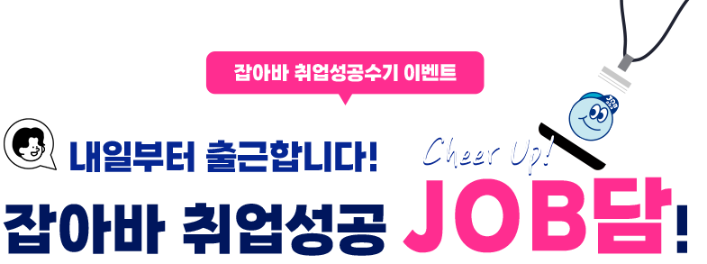
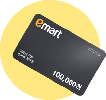
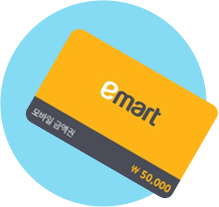
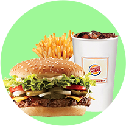
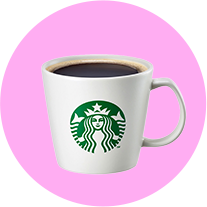

- 이벤트 기간 2022년 05월 30일(월) ~ 06월 17일(금)
- 당첨자 발표 2022년 06월 20일(월)
대상

1명
이마트 상품권
10만원권
최우수상

5명
이마트 상품권
5만원권
우수상

30명
버거킹
와퍼세트
장려상

50명
스타벅스
아메리카노
EVENT 참여방법
- ① 회원가입 및 로그인 → ② 취업성공수기 등록 → ③ 이벤트 참여 완료!
- 누구나 겪는 인고의 취업준비 기간! 나만의 취업성공 과정을 들려주세요! 취업성공을 위해 어떤 노력들을 했는지,
잡아바에서는 어떤 도움을 받았는지 자유롭게 작성해주시기 바랍니다.
아래 내용을 포함시키면 당첨확률이 올라갑니다!
- 취업준비 중 가장 힘들었던 점은 무엇이었나요?
- 현재 자신의 업종(직무)에 취업하기 위해 가장 노력한 부분은 무엇인가요?
- 취업준비 중 잡아바 사이트에서 어떤 도움들을 받으셨나요?
우수 후기 채점표
| 구분 | 채점 내용 | 배점 | |
|---|---|---|---|
|
정성 평가 |
정보성 | 30 | |
| 구체성 | 30 | ||
|
정량 평가 |
성실성 | 20 | |
| 적합성 | 20 | ||
| 계 | 100 | ||
잡아바 취업성공수기 모음ZIP
전체 보기 →잡아바 취업역량강화서비스

총 130 개
-
이벤트 참여 완료되었습니다.
- 이예*
- bg26 **************
- 2020-10-25
-
첫직장부터 이직까지 잡아바와 잡아바!제가 처음 잡아바를 알게 된 것은 2018년 경기도 청년구직지원금을 신청하면서였습니다. 당시 저는 졸업 후 첫 직장을 결정하는데 있어 많은 고민을 하고 있었던 때였습니다. 저의 전공은 컴퓨학입니다. 하지만 저는 마케팅 직무로 취업하길 희망하였고 원하는 직무로 가기 위해서는 관련된 지식을 습득하는 것도 필요했고 취업을 준비하며 생활할 생활비도 필요했습니다. 청년구직지원금을 통해 월 50만원씩 6개월간 지원을 해준다는 소식은 사막을 걷다 오아시스를 만난 것 같은 소식이었습니다. 지원금에 합격한 6개월동안 비용걱정없이 마케팅에 관련한 수업을 들을 수 있었고 결국 한 마케팅 회사에 취업할 수 있었습니다. 그렇게 1년 8개월을 첫 직장에서 의미있는 시간을 보내다 이번년도 2월 퇴사를 하게되었습니다. 퇴사의 이유는 다른 업계로 이직하여 저의 마케팅 실력을 더 성장시키고자 함이었습니다. 오랜만에 다시 취업을 준비하는 것은 생각보다 쉽지 않았습니다. 자기소개서도 다시 써야했고 면접도 새롭게 준비해야 했습니다. 그때 저는 저의 첫번째 직장을 갈 수 있게 도와준 잡아바를 떠올렸습니다. 오랜만에 들어온 잡아바에는 다양한 교육들과 취업역량강화서비스가 생겨있었습니다. 취업역량강화서비스 중 AI면접을 통해 면접 준비를 할 수 있었고 지난 8월 이직에 성공해 지금은 스타트업 마케팅팀에서 2개월차 경력직 마케터로 일하고 있습니다. 첫 취업부터 이직까지 잡아바를 통해 저의 인생의 직업을 잡을 수 있었습니다. 제가 만약 또 이직을 하게 된다면 그때도 저는 잡아바와 함께 할 것 입니다:) 잡아바를 통해 여러분의 미래를 잡을 수 있습니다. 절대 포기하지 마세요!
- 이예*
- bg26 **************
- 2020-10-25
-
12년간의 유학생활 청산 후 성공적인 한국생활 & 취준 성공기!저는 중2 끝내고 한국을 떠나 중국과 미국에서 유학 생활을 했습니다. 소프트웨어를 전공하다가 그동안 공부해보고 싶었던 심리학으로 편입을 해서 석사학위까지 따고 약 3년 전, 제가 28살 때 한국으로 완전히 귀국하게 되었습니다. 방학 때 잠깐씩 나와서 겪어보는 한국과 생활하면서 느끼는 한국은 많이 다르더군요! 12년 동안 가족들과 떨어져 지냈다보니 부모님이랑도 매일 생활하는 게 어색하고 때때로 불편할 정도였으니까요. 나이만 먹었지 학업이 길어져 사회생활의 '사'짜도 경험 못 해본 것도 갑갑한데, 제가 없었던 12년동안 많은 변화가 있었을 한국에서 직장을 찾아 정착하려니 정말 어디서부터 어떻게 시작해야 할지 감이 안 오더라구요..그래서 일단 한국 사회 적응에 꼭 필요한 것부터 시작했습니다. 1. 한국인들도 이 시험 봐요! 한국어능력시험 한국을 떠나기 직전까지도 저는 국어성적이 제일 낮을 정도로 정말 국어는 못했어요. 안그래도 못하는 국어, 유학을 시작하니 더 퇴보하더라구요. 사실상 발음만 한국 사람이지, 어휘력이나 문법은 그냥 한국어 잘하는 외국인정도? 아무리 유학 생활이 길었다고 해도 저는 태생이 한국 사람이고, 한국에서 정착하려면 한국어 능력을 좀 길러놓는게 좋겠다 생각해서 예비 아나운서나 pd들이 보는 KBS한국어능력시험에 3급을 목표로 공부를 시작했습니다. 구글링을 해보니 2주 빠짝 공부하면 2급은 나온다고 하더라구요! 물론 수능 치룬 사람 기준이라 저의 한국어실력을 고려해서 3급을 목표로 2달간 공부를 했습니다. 대중교통을 이용할 때라도 공부해보겠다며 생애 처음으로 돈 내고 어플도 사고 2달 동안 기출문제집 6권을 풀며 열심히 했습니다. 그래서 결과는 어땠냐구요? 제일 낮은 급수인 4급도 아닌, 무려 무급! KBS한국어능력시험은 상대평가인지라 저랑 같은 시험을 봤던 분들이 대체적 잘 보면 제 급수는 상대적으로 뚝뚝 떨어지죠. 2달간 정말 열심히 공부했는데 무급나와서 정말 충격적이고 부끄러워져서 2달간 가족들한테도 말도 못하고 혼자 끙끙거렸던 기억이! 하지만 급수만 안 나왔지 공부하기 전 한국어 실력보다 정말 많이 늘어서 이 정도로 만족하는 중이에요! 기회가 된다면 그땐 정말 3급을 목표로 도전해보려고요! 2. 취준 시작 전, 나 자신부터 들여다보기. 전 미국에서 대학원 생활 때부터 프로파일링과 범죄심리학에 관심이 많아져서 관련 워크샵과 인턴 활동을 했었어요. 한국으로 귀국할 당시에도 경찰청 프로파일러를 염두에 두고 취업을 준비하려 했었는데요. 하지만 막상 이 직업으로 돈을 벌어 생활하려는 생각하니 다른 생각들이 꼬리에 꼬리를 물어 저를 고민에 빠트리더라구요. ‘12년 동안 유학한다고 등골브레이커했었는데..공무원 월급이면 가성비가 너무 안 좋은 게 아닐까?’라는 괜스레 부모님께 죄송한 마음, ‘경찰집단 특성상 보수적이고 수직적일텐데 수평적인 문화에서만 살았던 내가 과연 잘 적응할 수 있을까?’라는 막연한 두려움 등등. 하루에도 몇 번씩 유투브와 구글을 통해 프로파일러 후기를 읽어보며 이 직업뿐 아니라 직장생활 자체에 대한 의미에 대해 다시 생각해봤습니다. 직장생활을 하면 이젠 집보다 회사에 더 오래 있을 텐데, 시간이 걸리더라도 정말 나에게 잘 맞는 곳에서 일해야겠구나-, 안 그러면 얼마 못 버티거나 불행해지겠다-라는 생각. 그렇게 해서 시작된 내 자신 들여다보기. 직업 선택에 있어서 사실 가장 먼저 바탕이 되어야 하는 게 제 성향과 강점, 또 역량이 무엇인지 아는 것인데 취업 준비 초반에는 심리적 부담감 때문에 그랬던지 이 부분이 명확히 보이지 않고 터널뷰를 가진 것마냥 아직 많은 생각을 하지 않은 부분에 그냥 막연히 해내려고만 하려 했던 강박적인 생각이 지배적이었던 것 같아요. 그래서 공책에 두서없이 써내려간 내가 아는 나 자신에 대한 정보. 항상 배우고, 배운 것을 공유하며, 실패를 교훈 삼아 다시 도전하는 회복력과 긍정심이 제가 파악한 제 강점이었고 최신 기술을 선도하는 사람들과 일하고 사회에 긍정적인 영향을 끼치는 일을 꼭 해보고 싶은 제 마음을 확인했어요. 그리고 여유롭진 않아도 간간히 행복을 누리며 미래에 대한 준비를 할 수 있을 만큼의 최소 생활비와 적금을 산정해서 월급 얼마 이상은 받아야겠다-라는 저만의 기준도 세웠지요. 그렇게 만들어진 저만의 취업 체크리스트! 1번. 내 강점을 잘 살릴 수 있는 직종인가? 2번. 최신 기술을 선도하는 산업인가? 3번. 사회에 긍정적인 영향을 끼치는 사업을 하는 곳인가? 4. 내가 정한 최소 월급 정도는 받을 수 있는 곳인가? 이 체크리스트를 기준으로 저도 보완할 수 있는 부분을 가꾸며 본격적인 취준 생활을 시작했답니다. 3. 최신 기술을 선도하는 기업에서 필요한 역량! 코딩을 배우자. 전 대학 첫 전공이 소프트웨어기도 했고 그 당시엔 쓸 수 있는 어플도 없어 지금 생각하면 정말 예쁜 쓰레기었던 스마트폰 1세대도 제일 먼저 달려가 구매할 정도로 신기술에 대한 호기심과 열정이 많아요. 그래서 IT기술을 활용한 다양한 사업들도 누구보다 빨리 알고 싶더라구요. 이런 산업에서 일하려면 내가 부족한 것은 뭔지 생각해보니 바로 코딩능력이 있더라구요. 아무리 전공이 소프트웨어일지라도 1학년 끝내고 심리학으로 편입했으니 사실상 코딩을 배울기회가 없었습니다. 그래서 배우게된 파이썬과 R. 배워야겠다-라고 생각이 들었을 때 운좋게 제가 살던 동네에서 정부지원 수업이 개강을 한다고 공고가 떴더라구요. 그래서 바로 수강 신청. 그렇게 매주 5회 4시간씩 약 3달 코딩공부를 했어요. 지금 생각하면 이 공부가 신의 한수라고 생각했을 정도로 지금 직장에서의 업무에 없어선 안될 것이었어요. 4. 조급하지말고, 체크리스트만 보자! 체크리스트도 준비됐고 필요한 코딩능력도 조금 생겼을 즈음 용기를 내어 본격적으로 취업 지원을 시작했어요. 구직구인사이트들을 돌아다니며 입사지원서를 쓸 만한 회사나 기관이 있을지 노트북 옆에 적힌 체크리스트를 항상 확인하며 찾아봤어요. 하지만 몇 일, 몇 주를 찾아봐도 제가 정한 4개의 체크리스트 항목을 모두 충족시키는 곳은 1곳도 없더라구요..맞아요. 취뽀가 생각만큼 쉬우면 우리나라 실업률은 이렇게 높지 않았겠죠? 한 달 반 정도는 지원서도 못 내보고 제가 원하고 체크리스트를 모두 충족하는 회사는 찾지 못했답니다. 너무 안 찾아져서 불안한 마음이 커질 때마다 운명의 상대를 기다리는 그런 설레는 마음과 기대로 긍정적으로 생각하려고 부단히 노력했습니다. 계속 두드리면 열릴 것이라는 말처럼 본격적인 취업 준비 시작 이후 2개월째에 제 운명의 회사를 만났습니다. 그 어렵던 제 체크리스트를 100% 충족시키는 그런 멋진 곳이요! 8개월간의 취업 준비를 통해 만난 지금의 회사는 4차 산업의 선두 기술로 자주 이야기되는 인공지능과 가상현실을 다루는 곳이에요. 이 곳에서 저는 제 심리학 전공을 살려 병원들과 함께 치매 관련 임상 연구를 기획하고 진행하고 있습니다. 심리학 전공에 IT 백그라운드가 있어 저희 회사 기술과 이 기술을 활용하고자 하는 병원/의사들 사이에서 다리 역할을 맡으니 회사에서 인정받아 연봉도 제가 정했던 것보다 더 많이 받으며 일하고 있네요! 하루하루가 행복한 직장 생활. 저도 하고 있으니 다른 분들도 꼭 해낼 수 있으리라 생각합니다. 저는 정말 보통 중의 보통의 사람이거든요. 다만 꼭 열릴 때까지 포기 말고 계속 두드리시길 바랍니다. 그럼 열릴 것입니다.
- 전형*
- hyou ***************
- 2020-10-25
-
[힘든길만 골라가면 당연히 힘이든다.]저는 10대때부터 20대후반까지 외식서비스 직종에서 근무를 해왔었습니다. 그러나 일을 하면 할수록 이 길이 나에게 맞는지에 대한 생각이 점점 많아졌고 결국 퇴사를 결심하게 되었습니다. 그동안 그저 돈만 벌겠다고 아무런 준비 없이 그렇게 20대의 시간을 전부 보내게 되었고, 그렇게 보낸 시간들은 이후 취업준비과정에서 저를 되돌아 보는 중요한 시간이 되었습니다. 먼저 저는 평소에 관심이 있던 분야(무역 유통 물류)부터 생각해 보았고, 그 분야에 대한 이론 및 실무적 경험이 전무하였기 때문에 1부터 시작한다는 마음으로 공부를 하였습니다. 그러나 독학으로는 분명 어려운 부분이 있었고, 우리가 흔히 아는 사람인, 잡코리아, 링크드인, 같은 취업사이트에서는 교육지원에 대한 내용이 없어서 막히는 부분이 있었습니다. 이때 실업급여를 받고 있었던 기간이였는데 광명고용센터에서 이 고민을 이야기 하니 경기도 잡아바 사이트를 소개해주셨습니다. 사이트를 들어가서 확인해보니 교육지원은 물론이고, 주거,교통,생활,금융 지원등 그동안 알지 못했던 금빛같은 취업지원 정책들이 많았습니다. 그 중에서 취업성공패키지를 통해 교육훈련을 받으려고 하였으나, 실업급여 수급중이여서 해당 교육대상자가 될 수 없었습니다. 해결책을 찾기위해 시간이 날때마다 들어가서 확인을 한 결과 "국가기간전략산업직종훈련" 프로그램이 있었고, 다행히 교육대상안에 유통물류가 포함되어 있었습니다. 그 교육을 2018년5월부터 2018년9월까지 약 4개월 가량 훈련을 받고 물류관리사를 비롯하여 국제무역사,ERP물류,생산 등 자격증 취득을 하게 되었습니다. 확실히 기관의 도움을 받으니 공부하는데에 더욱 수월하였습니다. 교육 컨텐츠 안에는 해당 전문분야 교육뿐 아니라 취업준비(인터뷰 요령,자기소개서 작성, 선배기수 만남)에 대한 교육훈련도 포함되어 있었습니다. 이후 자신감을 갖고 13개이상 자격증을 취득하였고, 이 교육 훈련을 바탕으로 현재 재직중인 외국계 기업(써모피셔사이언티픽 코리아)에 취업하게 되었습니다. 분명히 취업성공이라는 목표아래에서 같은 길을 가더라도 누군가는 취업에 관한 지원정보들을 제공받아 좀 더 쉽고 빠르게 갈 수 있습니다. 잡아바의 정보들을 이용하면 분명 좋은 결과 얻으실 수 있을것 입니다.
- 김광*
- kksz ***************
- 2020-10-25
-
dddd
- 정상*
- jjh1 ****************
- 2020-10-25
-
국비지원 자격증취득과정 교육과 면접정장 무료대여로 취업성공했어요!올해 이직때문에 다니던 직장을 관두고 이직 준비를 하고 있었을때 잡아바를 알게 되었어요. 새로운 직장에 취업하기 위해서 나에게 맞는 맞춤정보로 검색해서 국비지원으로 교육훈련을 신청해서 받았답니다. 전문직이라서 필요한 국가자격증 외에도 다양한 자격증을 갖추면 더욱 좋은 스펙을 갖출수 있으니까 저에게는 좋은 기회였지요. 주로 컴퓨터 관련해서 자격증을 알아보고 컴퓨터활용, 그래픽, ITQ 자격증을 취득하는데 도움을 받았답니다 그게 취업에 가산점으로 도움이 많이 된것 같아요! 지금 제 직업은 직업상 코로나19의 영향을 많이 받는 직업이거든요. 그래서 요즘에는 더욱 취업이 어려운 직종인데, 남들보다 더 나은 스펙으로 취업의 문에 가까이 갈수 있었던것 같아요^^ 코로나19때문에 대부분의 업무가 비대면, 온택트 업무로 대체되면서 컴퓨터를 활용한 직무가 크게 늘었어요. 국비지원으로 미리 자격증 취득과정 교육을 이수한 덕분에 좀더 경쟁력을 갖출수 있었고, 지금 회사에서도 인정받으면서 편하게 일하고 있습니다. 그리고 근무할때 저희 회사는 자유복장으로 근무하는 곳이라 정장이 필요없는데요, 면접보는날 면접을 위해 한번 입을 정장을 구매하는게 부담이 되었었거든요. 근데 그때 잡아바를 통해 시에서 무료로 정장을 대여해주는 서비스가 있다는 것을 알게 되었고, 그 덕분에 제게 맞는 깔끔한 정장으로 면접을 봐서 취업준비하는데 도움이 되었지요. 코로나19로 취업이 다른해보다 더욱 어렵지만, 취업을 준비하는 취준생들 모두 잡아바 경기도일자리재단을 통해 자신에게 맞는 정책과 혜택을 찾아서 도움을 받고 취업에 성공하시길 바랍니다! 화이팅!
- 김태*
- kimt *****************
- 2020-10-25
-
[사소한 것에서 알아가는 꿈의 직업]저는 올해 상반기 취업 준비를 통해 제조업 회사의 해외 영업 직무에 취직하는 데 성공할 수 있었습니다. 하지만 저 역시 그 과정에서 코로나를 포함해 다양한 어려움을 겪었으며, 가장 힘들었던 점은 바로 직무 적합성에 대한 불확실성이었습니다. 즉, 정말 해외 영업 직무가 정확히 무엇인지, 내가 잘할 수 있는 역할인지에 대한 근본적인 두려움이 생겼던 것입니다. 그럼에도 불구하고 이러한 어려움을 극복할 수 있었던 가장 큰 원동력은 '사소한 것이라도 관련 경험을 쌓아보자'라는 것이었습니다. 첫째, 외국인 고객 응대 아르바이트에 도전했습니다. 설날 연휴라는 단기간 동안 외국인에게 의류를 판매함으로써 해외 영업 직무를 조금이라도 직접적으로 이해할 수 있는 소중한 기회였다고 생각했기 때문입니다. 처음에는 외국어로 즉문즉답하는 것이 생각보다 쉽지 않아 당황한 적이 많았습니다. 이에 저는 점심 식사시간도 줄여가면서 의류 판매에 필요한 문장이나 단어 등을 미리 정리, 암기하는 등으 노력을 기울였습니다. 그 결과, 어느 순간 외국인과 대화하는 것이 편안해졌으며, 제가 소개한 제품이 고개 구매로 이어졌을 때의 쾌감을 느낄 수 있었습니다. 이로써 해외 영업 직무 역시 외국어라는 언어 도구를 기반으로 다양한 사람들과 소통하며 거래를 원활히 성사시킴으로써 자신과 고객 만족을 극대화할 수 있는 직무라는 것을 이해할 수 있었습니다. 나아가, 해외 영업 직무에 대한 비전과 그 열정을 더욱 키울 수 있었습니다. 둘째, 자기소개서 작성을 통해 직무의 정의, 역할에 대한 구체적인 이해력을 높였습니다. 특히, 직무 지원동기 및 직무 역량에 관한 항목을 작성할 때 큰 도움을 받은 것이 바로 '잡아바 사이트의 자기소개서 컨설팅'이었습니다. 실제로 3분 이상의 전문가들로부터 12번의 자기소개서 피드백을 받았고, 이를 통해 직무에 대한 필요 학습 내용과 함께 산업군에 대한 구체적인 계획 수립에도 도움을 얻을 수 있었습니다. 이를 기반으로 잡코리아, 자소설닷컴, 브런치 등의 취업 사이트에서 현직자 인터뷰를 조사하며 직무에 대한 깊이 있는 공부를 할 수 있었습니다. 예를 들어, 기존에는 해외 영업이 외국어와 영업이 합쳐진 직무이다라는 생각을 했다면, 직무 학습을 통해 해외 영업은 기존 고객사 관리(경쟁사 조사, 채권 관리, 제품 이슈 대응 등)와 신규 거래선 확보라는 큰 틀에서 이뤄진다는 것을 알게됐습니다. '잡아바 컨설팅'에 대한 추가적인 정보를 말씀드리자면, 단순한 컨설팅을 벗어나 글의 구조, 문장 및 단어 표현력에 대한 교정을 받았으며, 타 취업 준비생에 대한 피드백을 다양하게 찾아보면서 자기소개서 작성 역량을 더욱 높일 수 있었습니다. 이러한 노력 과정을 거쳐 면접 과정에서도 산업/회사/직무에 대해서 이해하는 것을 중점적으로 준비했으며, 특히 입사 후 내가 해낼 수 있는 비전을 구체화하는 데 집중한 것이 면접 성공의 비결이라고 생각합니다. 현재 회사가 겪고 있는 문제점 혹은 단기, 장기적으로 추구하는 미래 성장 동력을 이해하고 나서 내가 그 문제를 해결하기 위해 해당 직무에서 할 수 있는 일이 무엇인지를 고민해본 것입니다. 지금까지의 저의 취업 후기가 어느 취업 준비생분에게 큰 도움이 되길 바라며, 서두에서 말씀드린 것처럼 미래에 대한 불확실성이 있을 때는 사소한 것일지라도 다양한 경험을 통해 직무 이해도를 높이는 것이 중요하다는 것을 기억하시길 바랍니다. 이상 취업 후기를 마치며 많은 취업 준비생분들의 취업 성공을 기원하겠습니다!
- 정민*
- pirs **************
- 2020-10-25
-
직장에서의 원하고자하는걸 먼저판단하자준비하는기간이 길다보면 나도 지치게되고 회사에서의 원하고자하는 방향도 조금씩은 사회적 변화에 따라 바뀌게 되는거같다 그러니 입사규정과 내용들을 먼저 면밀히 판단할필요가 있고 만약에 내가 그만한 스펙도달했다면 당당입사지원넣고 회사에서의 원하고자하는걸 빨리캐치하고 움직임이 좋다 기본적인 배경에서의 나의 중요적인 역할입지도 올라가게되고 일의 즐거움도 찾을수있다 그냥 막연하게 직장상사의 시키는일을 하다보면 일의 노예적으로 끌려가기쉽다 나와 나한테 인정받고 만족누리며 승진의 기회도 조금은 엿볼수있는 좋은기회부여가 될것이다~취업준비하신분께 조금이나마 희망메시지가 되었으면 좋겠습니다 감사합니다^^
- 양원*
- salg ****************
- 2020-10-25
-
1년 미만 짧은 준비기간이라도 노력것1년 미만 짧은 준비기간이라도 노력것 많은 다양한 정보와 소식으로 꽉꽉 채워주시길 바랍니다. 행운이 함께 하시길 응원하겠습니다! 언제나 좋을 순 없지만 어려움이있다면 잘 해결하고 성공적 활동 기쁜 즐거움이 가득한 시간 이어가길 응원 팍팍전해요! 즐(KIN) 거운 시간 함께해요! 주변에 스펙 등 다양한 능력을 쌓는다고 힘든시간도 보내지만 그만한 노력이 뒤따라주는것같아요 스스로 찾아보면 취업 지원프로그램들이 정말 많습니다. 특히 요즘은 코로나때문에 온라인프로그램들이 많아서 집에서도 무료로 쉽게 들을 수 있어요. 그리고 굉장히 전문적입니다. 3. 이력서와 자기소개서는 많이 쓰면 써볼수록 부족한 점이 보이고, 실력이 늘고, 더 완벽해진다. 4. 면접은 많이 봐야 긴장이 덜 되고 잘 볼 수 있게 된다. -면접 기회가 오면 꼭 잡고, 면접이 끝난 후 바로 핸드폰 메모에 면접 질문, 답변등도 적어보고 고민해봐요다양한 정보에대한 지원과 내용이 강화되어서 좋아요 내년에도 더 구체적이고 다양한 소통창으로 활용되어라 승승장구해요 올한해 좋은일만 가득가득 그득그득 만땅 으로 일어나는 한해되세요 어려움도 잘 이겨낼 것 같아요 아자아자!! 힘내서 자주 소통하고 응원 하며 입소문도 전할게요! 오늘도 좋은하루 아자아자!! 좀 더 수월하게 취업할 수 있지만 면접 준비 혹은 자기소개서 준비등 제가 학교 다니면서는 알 수 없고 잘 모르는 것에 대해서 준비해야하는게 사실입니다. 그래서 잡아바에 있는 취업역량강화를 사용을 자주해서 도움을 받았습니다. 다들 취업힘내시고 올해 좋은일있으시길바랍니다
- 김숙*
- accu ****************
- 2020-10-25
-
희망 지원분야에 대해 잘 알지 못해도 지원해보는 것이 중요!!저는 교육기관에서 장비를 활용하여 교육을 기획하고 수행하며 시설을 운영하는 업무를 맡았었어요. 전공은 기획과 관련되지 않았고 그저 다른 사람에게 제가 알고 있는 지식을 알려주고 싶어 교육기획과 관련된 일을 시작했습니다. 그러면!! 제가 단계별로 준비한 내용을 말씀드릴게요!! 1. 경력: 희망업무와 전공과 상이하다 보니 ‘경력을 쌓아야겠다’ 라는 생각이 가장 먼저 들었고 또한 이 부분을 가장 중요하게 생각했어요. 그래서 저는 기획 관련 공공기관 인턴 -> 교육 교육업종스타트업 -> 교육기관으로 이직하며 경력을 쌓았습니다. 제가 근무한 회사마다 각각의 특성이 있고 경험해봄으로써 최종목표로 하는 곳에서 면접 볼 당시 흥미롭게 생각해주셨습니다. 2. 자기소개서: 잡아바 사이트의 도움을 받아 자기소개서 작성에 있어 필수항목인 지원동기, 자신의 장·단점, 입사 후 모습에 대해 어떻게 작성할 수 있을까 도움을 얻을 수 있었어요. 지원동기같은 경우에 회사의 인재상, 핵심가치, 회사비전을 빗대어 자신에게 적용할 수 있는 장점을 활용하여 작성을 지도해주셨어요. 자신의 장·단점같은 경우에 신입으로써 열심히, 성실히 할 수 있다는 내용으로 장점을 기재하였고 단점이 있지만 장점으로 커버할 수 있는 단점으로 썼어요. 입사 후 모습같은 경우에 제가 하고 싶은 업무인 만큼 6개월, 1년, 5년 단위로 기재하였고 주로 회사에 보탬이 되는 내용으로 작성하였습니다. 3. 면접준비: 1분 자기소개, 지원동기, 마지막 할 말 이 세가지는 머릿속에 외워서 바로 얘기할 수 있을 정도로 외워갔어요. 그리고 자기소개서 기반으로 예상질문들을 추려서 준비했고 면접 당시 막힘없이 모든 질문에 답변했어요. 4. 입사지원: 사실.. 저한테 이부분이 제일 막막하고 힘들었습니다. 전공과 상이하다 보니 다른사람과 비교하였을 때 괜히 주눅들고 입사지원을 망설일 때가 많았습니다. 그럴 때일수록 해낼 수 있다는 자신감을 꼭 가지길 바래요. 이 두려움을 이겨내야 앞으로 나아갈 수 있는 것 같아요. 5. 교육기획 업무: 다행히 제 사수께서 프로그램 기획에 있어 많이 알려주셔서 금방 배울 수 있었어요. 제가 생각할 때 기획업무는 OA프로그램을 어느정도 알고 가야 문서 작성할 때 어려움이 없을 거예요. 또한, 문서의 종류가 어떤 것들이 있는지 개념 파악하는 것도 중요하고 작성하고자 하는 내용을 문서에 모두 담을 수 있는지가 중요하고 깔끔하게 보이는 것이 정말 중요해요. 저는 입사 이후에 NCS 인정 수업 중 사무행정, 총무, 프로젝트 관리, 회계 과목을 수강하여 업무의 폭을 넓혔습니다. 6. 인간관계: 인간관계에 있어 자신과 성향이 맞지 않은 분들도 있지만 맡은 일에 최선을 다하다 보면 자신 주변에 좋은 분들이 생길 거에요. 직장에서의 선은 지키고 그렇다고 너무 어렵게 생각하지 않아도 됩니다. 7. 기타: 자신이 맡은 업무에 허점이 없어야 주변 사람들이 얕보지 않아요. 그러니 꼼꼼하고 확실하게 자신에게 주어진 업무를 완수하길 바래요! 코로나19로 인해 상황이 어렵지만 모두들 원하는 곳에 합격하길 소망합니다^^
- 이택*
- monk *************
- 2020-10-19
-
경기도에 살아서 행복해요! 경기도부심 뿜뿜~안녕하세요! 저는 평소에도 경기도일자리재단과 잡아바를 통해 경기도의 청년을 위한 정책에 대해 잘 알고 있었어요. 그리고 약 2년 간의 석사과정을 무사히 마치고, 드디어 취업 준비를 시작하면서 잡아바의 청년 취업 지원 프로그램들을 이용할 수 있게 되었습니다!!! 2월에 대학원을 졸업하고, 3월부터 취업 준비를 시작했는데, 그때는 마침 코로나19 바이러스 때문에 사회적 거리두기가 처음 시행되고, 시험도 연기되거나 취소되고, 채용 공고도 많이 없어서 굉장히 혼란스러운 상황이었어요. 그래서 취업 준비 계획을 세우고, 제가 무엇을 먼저 해야할 지 알아보기 위해 잡아바에서 사전진단서비스를 이용했습니다! 저는 대학원을 졸업했기 때문에 제가 원하는 직무나 기업을 잘 파악하고 있었고, 직무 역량도 어느정도 준비 되었지만, 석사 과정 동안 토익점수가 만료되었고, 스피킹점수도 없어서 어학 부분에서 많이 부족했습니다.ㅠㅠ 하반기 취업을 목표로 하고 있었기 때문에 하반기 채용이 시작되기 전에 공인영어점수를 만들어야겠다고 계획하고, 코로나 때문에 학원가는 것도 조심스러워서 집에서 혼자 인강을 들으며 토익과 오픽을 공부했습니다. 그러나 가족이 다 있는 집에서 공부를 한다는게 여간 어려운 일이 아니었기때문에 꽤 오랜 시간이 걸렸어요 ㅠㅠ 남들은 금방 금방 공부해서 점수도 높게 받고 다음 단계를 준비하는데 저만 제자리인 것 같고 자신감이 떨어졌죠...그래서 고득점은 아니더라도 평균점수라도 받자라는 마음으로 조급한 마음 내려놓고 천천히라도 공부해서 하반기 채용이 시작되기 전에 점수를 만든 것이 참 다행이었어요! 그리고 7월부터 본격적으로 이력서와 자기소개서를 작성하기 시작했습니다. 잡아바의 합격자소서를 많이 참고했고, 코멘토의 자기소개서 첨삭 및 AI분석과 면접 대비 서비스를 받았습니다. 코멘토는 현직자분들이 직접 멘토링을 해주시기 때문에 정말 많은 도움을 받았습니다! 그렇게 사람인과 잡코리아에 이력서와 자기소개서를 등록해놓고 공개 설정한 후 기업이나 헤드헌팅으로부터 면접 제의를 받을 수 있게끔 했습니다. (실제로도 3번정도 제의가 왔습니다!) 그리고 8월부터 따발총처럼 엄청 많이 지원을 하였고, 그만큼 면접도 홍길동처럼 보러다녔습니다. 확실히 지원을 많이 하면 할 수 록 자기소개서 내용이 점점 더 좋아졌어요!!!!!!! 그래서 후반부에 갈 수록 면접기회가 점점 더 많아졌던 것 같습니다♡ 서울,김포,안양,수원,인천,대전,청주 등..... 그 뜨거운 태양 아래서 마스크쓰고 참 많이도 면접보러 다니느라 정말 얼마나 고생했는지 모릅니다 ㅠㅠㅠㅠㅠㅠㅠ 그래도 정말 실질적으로 큰 도움이 된 것은 경기도일자리재단에서 제공하는 면접수당이었습니다! 면접 정장과 구두를 사야했고, 특히 교통비가 진짜 많이 깨져서 생활하는게 많이 어려웠는데 ㅠㅠ 면접확인서만 있으면 면접 1건 당 35000원을 제공해줘서 정말 든든한 지원과 도움이 되었습니다♡ 그리고 면접수당과 함께 무료로 취업지원프로그램을 제공해줬는데, 저는 취업하면서 무너졌던 자신감과 자존감을 회복하기 위해서 멘탈코칭과 마음챙김 수업을 들었어요. 무료인데도 불구하고 정말 전문적으로 강의해주셔서 마음이 많이 회복되었고, 강의를 다 들으면 기프티콘까지 주셔서 취준생들을 진심으로 응원해주는 마음이 느껴서 정말 감사하고 감동했습니다♡ 그리고 잡아바에서 심리상담서비스도 신청해놨는데, 직장생활과 사회생활에 대한 조언도 받고, 일도 잘 다니고 싶어서 기대가 많이 됩니다 ㅎㅎ 그리고 청년과학기술인 일자리박람회를 통해 중견기업에도 지원했는데 감사하게도 서류합격하고 전화면접도 봤어요! 다른 기업으로 입사가 결정되기는 했지만 혹시 모르니까 앞으로 채용과정이 더 남았기에 계속 준비해보려고 합니다 ㅎㅎ (비밀~~~) 그리고 서류합격한 곳은 잡플래닛을 통해 기업 분석을 하였고, 잡플래닛의 면접후기를 보면서 대비했어요! 면접은 어떤 질문을 받을 지 모르기에 최대한 많은 질문을 뽑아서 기업에 맞게 답변을 마련하고 완벽히 외워서 머리에 입력해놓는게 중요했어요. 그래야 준비하지못한 질문을 받아도 당황하지않고 제 머릿속에서 꺼내서 대답할 수 있거든요! 그리고 연구개발은 특히나 전공,연구,실험 등에 대한 질문을 꼬리를 물고 엄청 자세하게 하시기때문에 정말 철저한 준비가 필요합니다! 그래서 스스로 직무에 대한 공부도 많이 했었습니다. 이상 약 8개월 간의 취업 준비를 마치고 이제는 11월에 입사하게 되었습니다! 코로나19바이러스로 전세계가 혼란스러운 상황에서 그 힘들다는 취업에 성공하게 되어서 정말 행복하고 홀가분합니다!!! 절대로 혼자한 것이 아니고, 여러 지원 프로그램들을 스스로 알아보고 적극활용한것이 아주 큰 도움이 되었습니다!!! ☆정리해서 말하자면☆ 1. 진단 서비스를 통해 나의 현상태를 파악하자. -어느 기업/직무에 지원하고 싶은지 목표와 방향성이 정확해야 거기에 맞게 시간 낭지하지않고 준비할 수 있기 때문입니다. (공무원,공기업,사기업 등..) 2. 나에게 부족한 역량을 기르기 위해 적극적으로 노력하자. -스스로 찾아보면 취업 지원프로그램들이 정말 많습니다. 특히 요즘은 코로나때문에 온라인프로그램들이 많아서 집에서도 무료로 쉽게 들을 수 있어요. 그리고 굉장히 전문적입니다. 3. 이력서와 자기소개서는 많이 쓰면 써볼수록 부족한 점이 보이고, 실력이 늘고, 더 완벽해진다. 4. 면접은 많이 봐야 긴장이 덜 되고 잘 볼 수 있게 된다. -면접 기회가 오면 꼭 잡고, 면접이 끝난 후 바로 핸드폰 메모에 면접 질문, 답변을 최대한 기억해내서 적고 스스로 피드백합니다. 그리고 보완해야할 점은 꼭 개선하도록 합니다. 기회가 안온다면 모의면접 프로그램을 이용하거나 면접스터디를 하는 것도 좋습니다. 이상 저의 취업 성공 스토리를 공유합니다!!!!!!! 많은 분들께 도움이 되어서 모두들 꼭 취뽀하셨으면 좋겠고, 무엇보다 자기 자신을 이해해주고, 용납해주고, 믿어주고, 응원해주고, 비난하지말고, 위로해주는게 중요한 것 같습니다! 일자리가 없고, 취업이 늦게 되는 것은 사회시스템의 문제이고, 자꾸 떨어지는 것은 내가 부족하기보다는 나보다 더 적합한 사람이 있었구나 생각하면서 넘기고 잊길 바라요! 화이팅!!!!!!!
- 임세*
- sera ************
- 2020-10-25
1 / 13
나의 취업성공수기 STORY
나만의 취업성공 노하우 (500자 이상)
※ 글자 수 미달 시 당첨대상에서 제외됩니다.